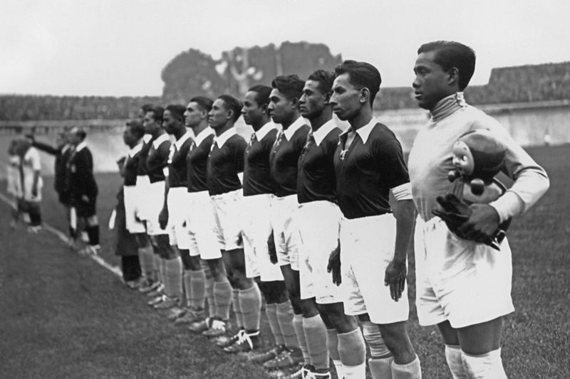

Sejarah
Tim Nasional Sepak Bola Indonesia memiliki sejarah panjang yang dimulai sejak berdirinya Persatuan Sepak Bola Seluruh Indonesia (PSSI)
pada 1930 oleh Soeratin Sosrosoegondo. Pada 1938, Hindia Belanda (sekarang Indonesia) menjadi negara Asia pertama yang berpartisipasi di Piala Dunia FIFA.
Setelah kemerdekaan, Indonesia mencapai perempat final Olimpiade Melbourne 1956 dan meraih medali emas SEA Games pada 1987 dan 1991.
Meskipun sering menjadi runner-up di Piala AFF, Timnas Indonesia menunjukkan konsistensi sebagai salah satu tim kuat di Asia Tenggara.
Dengan pemain bintang seperti Bambang Pamungkas, Boaz Solossa, Evan Dimas, dan Andik Vermansah,
serta pelatih terkenal seperti Alfred Riedl dan Shin Tae-yong, Timnas Indonesia terus berjuang untuk prestasi lebih tinggi.
Tantangan yang dihadapi termasuk pengembangan pemain muda, peningkatan infrastruktur, dan profesionalisme di liga domestik.
Dukungan besar dari para penggemar, pemerintah, dan PSSI memberikan optimisme bahwa Timnas dapat mencapai kejayaan di kancah internasional
melalui program pengembangan pemain muda dan kerja sama internasional yang terus ditingkatkan.
Stadion
Stadion Utama Gelora Bung Karno (SUGBK) di Jakarta adalah stadion utama Tim Nasional Sepak Bola Indonesia dan merupakan ikon sepak bola nasional.
Dibangun untuk menyelenggarakan Asian Games 1962, SUGBK memiliki kapasitas sekitar 77.000 penonton dan telah menjadi saksi berbagai pertandingan penting,
baik domestik maupun internasional. Stadion ini telah mengalami beberapa renovasi besar, terakhir pada 2018 untuk Asian Games, sehingga dilengkapi dengan
fasilitas modern yang memenuhi standar FIFA. SUGBK tidak hanya berfungsi sebagai tempat pertandingan, tetapi juga sebagai simbol kebanggaan nasional bagi rakyat Indonesia.
Atmosfer yang diciptakan oleh ribuan suporter setia memberikan semangat tambahan bagi Timnas setiap kali mereka berlaga di stadion ini.
Prestasi
Tim Nasional Sepak Bola Indonesia telah menorehkan sejumlah prestasi yang mengesankan, baik di tingkat internasional maupun regional.
Melalui berbagai pencapaian gemilang, Timnas telah membuktikan keberadaannya sebagai salah satu kekuatan sepak bola yang patut diperhitungkan.
Dari sejarahnya yang panjang, Timnas Indonesia telah menunjukkan konsistensi dan dedikasi dalam berkompetisi, menciptakan momen-momen bersejarah
dan menginspirasi penggemar sepak bola di seluruh negeri. Prestasi-prestasi ini membanggakan, memperkuat posisi Timnas Indonesia sebagai salah satu
tim terkemuka di Asia dan meningkatkan semangat kompetisi dalam panggung internasional.
Prestasi Internasional

Tim Nasional Sepak Bola Indonesia telah mencatat beberapa prestasi penting di kancah internasional. Pada 1938, saat masih bernama Hindia Belanda,
Indonesia menjadi negara Asia pertama yang berpartisipasi di Piala Dunia FIFA, mencapai babak 16 besar.
Selain itu, pada Olimpiade Musim Panas 1956 di Melbourne, Timnas Indonesia berhasil mencapai perempat final,
sebuah pencapaian yang menunjukkan potensi dan kemampuan tim pada masa tersebut.
Prestasi Regional
Di tingkat regional, Timnas Indonesia juga menunjukkan performa yang konsisten. Di Kejuaraan AFF,
Indonesia telah menjadi runner-up enam kali (2000, 2002, 2004, 2010, 2016, 2020), tempat ketiga sekali (1998),
tempat keempat sekali (1996), dan semifinalis dua kali (2008, 2022). Dalam Pesta Olahraga Asia Tenggara,
Indonesia meraih medali emas tiga kali (1987, 1991, 2023), medali perak tiga kali (1979, 1997, 2011),
dan medali perunggu tiga kali (1981, 1989, 1999), serta menempati posisi keempat tiga kali (1977, 1985, 1993).
Pada Pesta Olahraga Kejuaraan Timur Jauh, Indonesia meraih medali perak sekali pada 1934.
Prestasi-prestasi ini menegaskan posisi Indonesia sebagai salah satu tim sepak bola terkuat di kawasan Asia Tenggara.